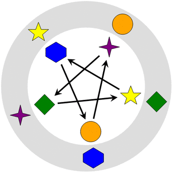
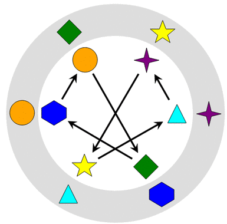
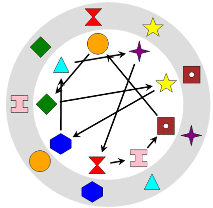

Lägg till pilar för att flytta varje form inom det vita området så att den hamnar mitt framför motsvarande form i det grå området.
Formerna följer
den första pilen
två pilar efter varandra
tre pilar efter varandra
.
Klicka på två former för att rita en pil. Klicka på en pil för att ta bort den.


